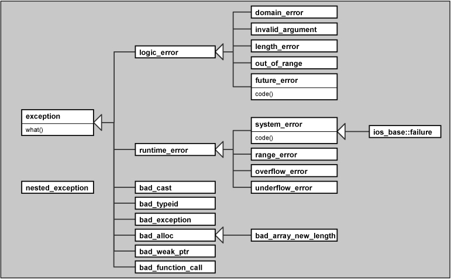

Error Handling
“Don't interrupt me while I'm interrupting." ― Winston S. Churchill
Outline
Mostly we will be looking at Exception Handling.
- What is an exception
- try catch
- throw
- exception guarantees
- RAII and scopeguard
- Traditional Error Handling
Introduction
Will we focus on the use of exceptions for errors that can't be handled locally. I will refer to "a library" as any code that is invoked to preform a task.
- A library is just normal code, but often the writer doesn't know how their code will be used.
- The Author of a library can often detect a run-time error but does not in general have any idea what to do about it.
- The User of a library may know how to deal with an error but can't easily detect it.
void taskmaster() { try{ auto result = do_task(); //use result; } catch(Some_Error) { //Failure to do_task: Handle Problem. } } int do_task(){ //..do something if(/*could preform task*/) return result; throw Some_Error{}; }
Traditional Approaches
- Terminate the Program: pretty drastic approach and often we can do better
if(something_wrong) exit(1);
- Return an error value: Not always feasible. Very much C style.
int getInt(); -> int getInt(int& out);
- Return a legal value and leave the program in an ""error state.""
- many C library functions set the nonlocal variable errno to indicate an error.
- Easy to forget to check.
- Call an error-handler functino
- Unless error-handler can fully handle the error likely still should call terminate.
if(something_wrong) something_handler();
Exceptions Default to Terminate
- Unhanded errors call terminate
- Exception handling makes programs more "brittle"
- This sounds bad but has some advantages.
- Preferable to getting wrong results later in the development process or after release.
- We can catch all exceptions when termination is unacceptable.
Hierarchical Error Handling
- Successful fault-tolerant systems are multi-level
- Each level copes with as many errors as it can without getting too contorted.
- Not every function should be a firewall.
- Leaves exceptions for higher levels if the current level can't deal with them
- This will be better understood when doing todays lab.

Catching Exceptions
void foo() { try{ //do stuff } catch(const std::runtime_error& e){ //Handle Runtime Error } catch(const std::exception& e){ //Handle every standard-library exception } catch(...){ //Handle anything.. but you don't know what it is. :( } }
Catching Exceptions
The more specific handlers get bypassed.
void foo() { try{ //do stuff } catch(...){ //Handle anything.. but you don't know what it is. :( } catch(const std::exception& e){ //Handle Generic std::exception } catch(const std::runtime_error& e){ //Handle Runtime Error } }
Exceptions in std::
Function-try-block
- Primarily used for logging.
- Can't access members of the class or of a base.
- Every catch-clause in the function must terminate by throwing.
struct S { std::string m; S(const std::string& arg) try : m(arg, 100) { std::cout << "constructed, mn = " << m << '\n'; } catch(const std::exception& e) { std::cerr << "arg=" << arg << " failed: " << e.what() << '\n'; } // implicit throw; here };
Rethrowing Exceptions
I can't fully clean up but I want to do something.
void foo() { try{ //do stuff } catch(const std::runtime_error& e){ //Partially Handle Runtime Error std::cerr << "DEBUG ME!!!\n"; throw; //Rethrows the same exception. }
Throwing exceptions
Is Easy
#include <stdexcept> void foo() { //... do stuff if(bad) throw std::runtime_error("Weeee!"); }
Creating your own exceptions
You can literally throw anything.
try{ throw 1; } catch(int e){ // process int }
But you shouldn't.
OK How to REALLY create your own exceptions
Derive from one of the sub-classes of std::exception in <stdexcept>
struct BadFile : std::runtime_error{ BadFile(const std::string& what):std::runtime_error(what){} }; void foo() { throw BadFile("This File is Bad"); }